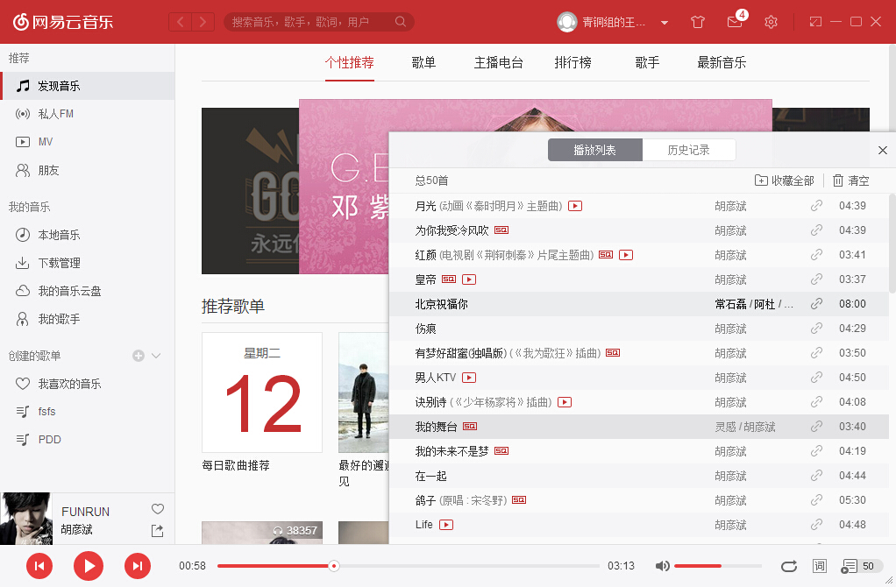

<script>
  var audioContext = new window.webkitAudioContext()
  var Visualizer = function () {
    this.file = null
    this.fileName = null
    this.audioContext = null
    this.source = null
  }

  Visualizer.prototype = {
    _prepareAPI: function () {
      this.audioContext = new audioContext()
    }
  }
</script>

